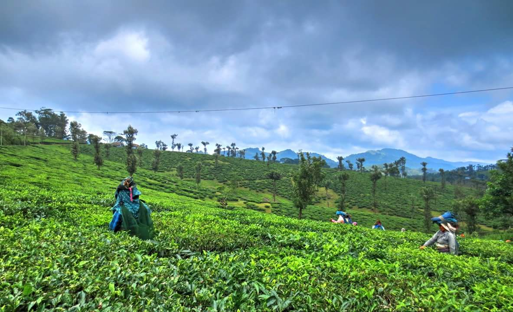
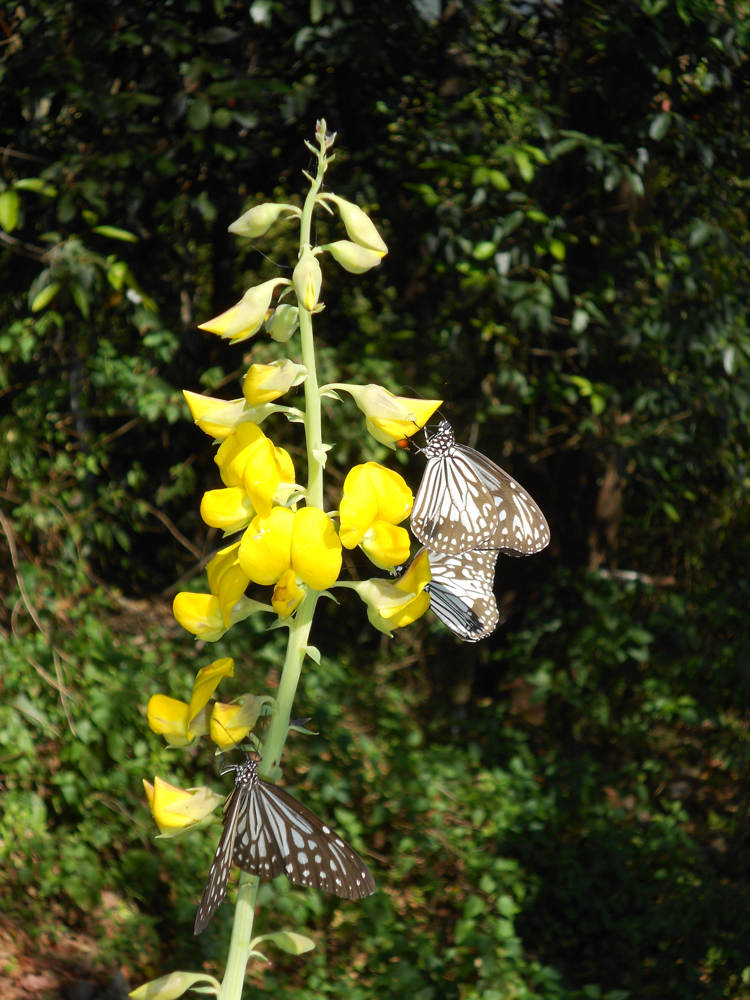

1.Palakkad fort
location

Palakkad Fort in Kerala is a beautiful historical monument surrounded by lush green gardens. It was built by Haider Ali in 1766 AD and is also famously known as the Tipu Sultan Fort. This mighty fort is spread over an area of 60,702 square meters and is loved for its architecture, surroundings, and history. In addition, some of the attractions in Palakkad fort are Hanuman Temple, Anjaneya Swami Temple, and a Sub-jail.
2.Nelliyampathy
location
This place is undoubtedly one of the must-visit places in Palakkad. Looking for a refreshing and rejuvenating getaway? Well, you should be visiting this place. You will find the entire landscape filled with waterfalls, dense forests, trekking trails and many more. Beautiful, right? In addition, it is also believed that Lord Rama along with his wife Devi Sita, spent some time here during their 14 years of exile. So, this place is also considered as a pilgrimage for the devotees.
3.Silent valley
location
Wildlife lovers, pay attention! The Silent Valley National Park is a UNESCO World Heritage Site and is one of the must-visit places in Palakkad. This place is home to several animals, plant species and birds. In addition, this park has the largest population of Lion-tailed Macaque, 34 species of mammals, 292 species of birds, 22 species of amphibians, 13 species of fishes, and 31 species of reptiles. That’s amazing, right? Also, make sure you never miss adding this beautiful place on your itinerary.